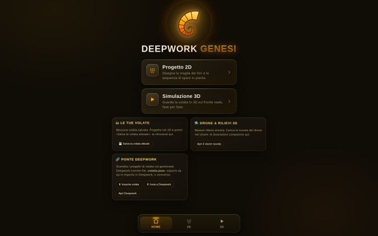
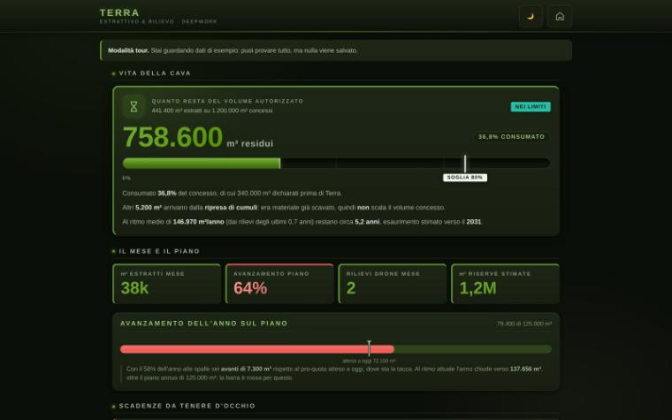
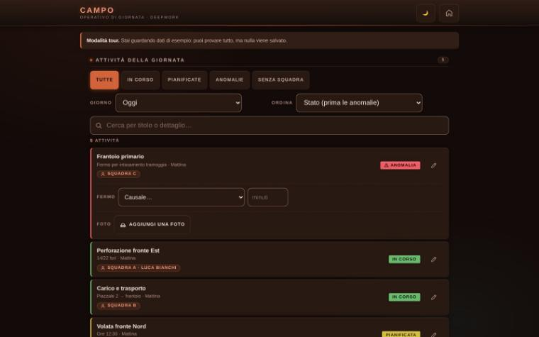
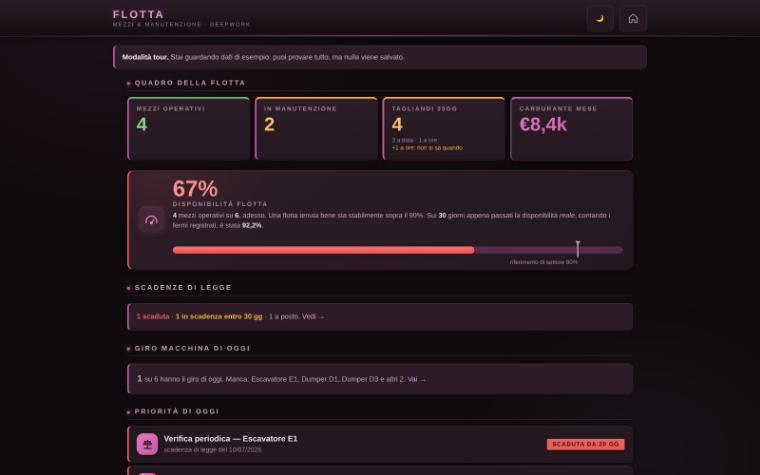
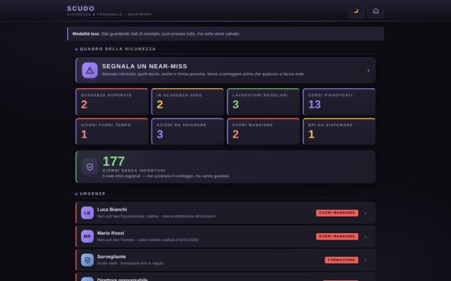
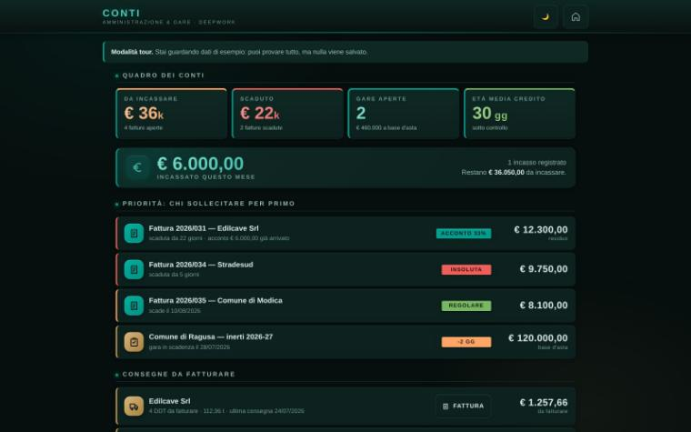
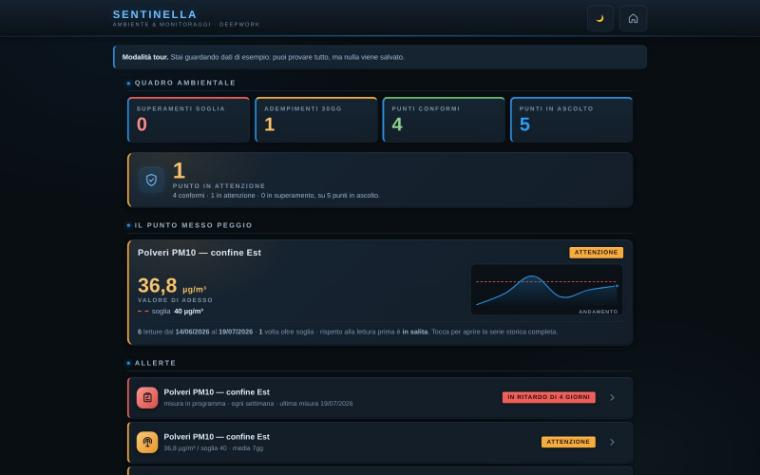
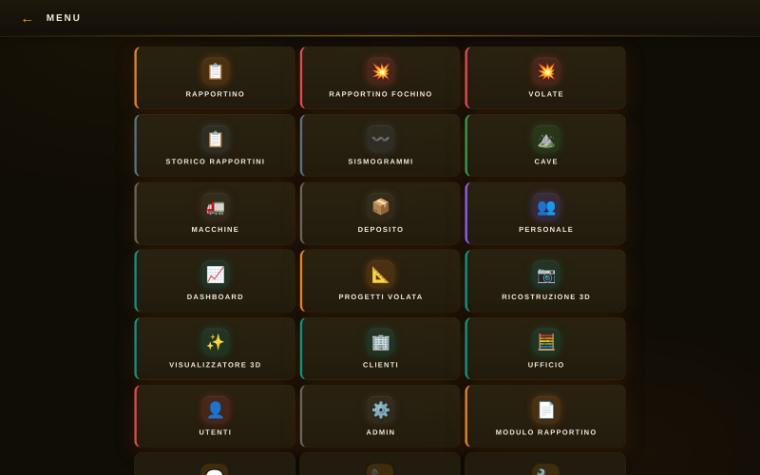
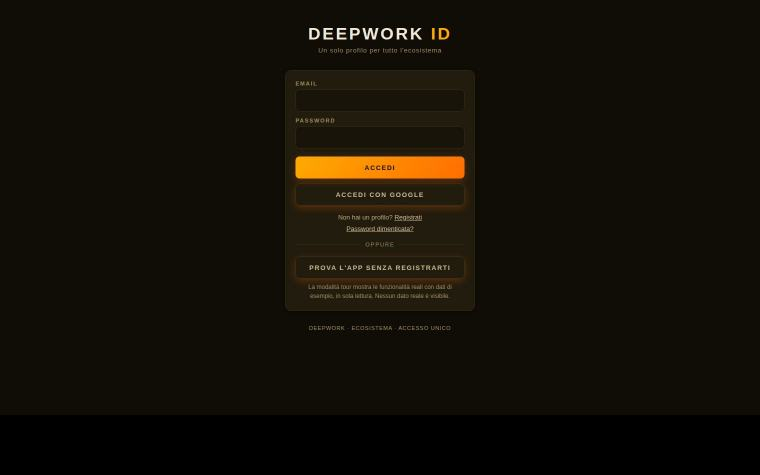

Otto strumenti per la cava. Un accesso solo, e si parlano tra loro.
Uno per ogni pezzo del lavoro: il fronte, la sicurezza, il turno, i mezzi, i conti, l'ambiente, i volumi. Si entra una volta sola, e quello che scrive uno arriva dove serve, senza ricopiarlo.
La differenza non è avere otto strumenti: è che si passano il lavoro. Sei cose che nessuno di loro, da solo, saprebbe fare.
Campo sa chi è in turno oggi, Scudo sa chi ha la visita in regola: messi insieme, il capoturno lo vede prima di mandare la gente al fronte.
Se fra i metri cubi cavati e le tonnellate vendute c'è un divario che non si spiega con lo sfrido, l'app lo dice invece di lasciarlo scoprire a fine anno.
I referti del sismografo tornano indietro nella progettazione: la previsione smette di essere quella del manuale e diventa quella della propria cava.
Il drone vola una volta ogni tanto; nel frattempo quello che dichiarano i turni dà la stima del momento, tenuta ben separata dalla misura vera.
Il consuntivo di carico segnato al fronte si mette accanto al previsto. La volata dopo parte da come si comporta questa cava, non da come dovrebbe comportarsi.
Soglia passata o reclamo di un residente: in Scudo nasce la non conformità da chiudere, con chi se ne occupa ed entro quando. Un grafico rosso non chiude niente.
Raggruppate per momento del lavoro. Ognuna funziona anche da sola: tocca un riquadro per aprirla con dati di esempio. Sono nove: gli otto strumenti e l'accesso unico che li tiene insieme.
Prima che si scavi: dove si progetta e dove si misura.

Lo schema di volata si prova sullo schermo invece che sulla roccia. Il piano di carico esce per il fochino, e quello che è successo davvero torna dentro.

Il volume concesso non è un numero da controllare a fine anno. I rilievi dicono a che punto si è, e quanti anni restano al ritmo di adesso.
Mentre si scava: il turno, i mezzi, le persone.

Il turno si chiude dove è successo, non a memoria la sera. Chi c'era, quanto è uscito, e dove si è perso tempo.

Tagliandi, revisioni e ricambi non si scoprono il giorno che il mezzo resta fermo. Il controllo di inizio turno diventa la lista di lavoro dell'officina.

Visite mediche, formazione, DPI e nomine smettono di vivere su fogli sparsi. Si sa in anticipo cosa scade, e chi non può più fare quel lavoro.
Dopo che si è scavato: i conti e quello che si deve all'ente.

I documenti di trasporto della pesa diventano fatture senza ricopiare una riga. E si sa chi chiamare per primo, e da quanto aspetta quel credito.

Ogni misura ha la sua data e il suo ricettore, invece di stare nella cartella del computer di qualcuno. C'è il calendario di cosa va misurato e quando, e il report per l'ente esce già scritto.
Sotto tutte: il quaderno di cantiere e l'accesso unico.

Volate, mezzi, deposito, personale, clienti, documenti dell'ufficio. Quello che serve ritrovare fra sei mesi sta qui, e si cerca dal telefono invece che in un raccoglitore.

Una password sola per tutte le app, e i dati di ogni azienda chiusi in casa propria. Ognuno entra e vede soltanto quello che gli compete.